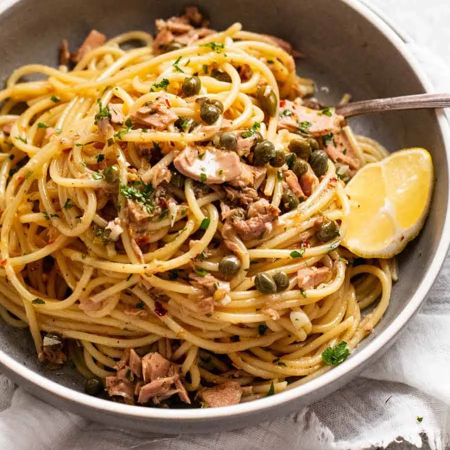

Tuna Pasta

Description
TTuna pasta is a simple, delicious dish of al dente pasta tossed with tender, flaky tuna, garlic, cherry tomatoes, and fresh herbs
Finished with a touch of lemon and olive oil, it’s a light yet satisfying meal
Ingredients
- 300g pasta (such as spaghetti or penne)
- 1 can tuna (in oil or water, drained)
- 2 tbsp olive oil
- 2 cloves garlic, minced
- 1 small onion, finely chopped
- 1 cup cherry tomatoes, halved
- 1 tbsp capers (optional)
- Salt and pepper, to taste
- Fresh parsley or basil, chopped (for garnish)
- Zest and juice of 1 lemon
- Grated Parmesan cheese (optional)
Steps
- Cook the pasta according to package instructions until al dente. Drain and set aside, reserving a cup of pasta water.
- In a large pan, heat the olive oil over medium heat.
- Add the minced garlic and chopped onion, and sauté until softened and fragrant, about 2-3 minutes.
- Add the cherry tomatoes and cook until they start to soften, about 5 minutes.
- Stir in the tuna, breaking it up with a spoon, and cook until warmed through.
- Season with salt and pepper to taste. Add capers if desired.
- Add the cooked pasta to the pan and toss to combine, adding a bit of reserved pasta water if the mixture seems dry.
- Remove from heat, then stir in the lemon zest and juice for a bright finish.
- Garnish with fresh parsley or basil and grated Parmesan cheese if desired.
- Serve warm and enjoy your tuna pasta!